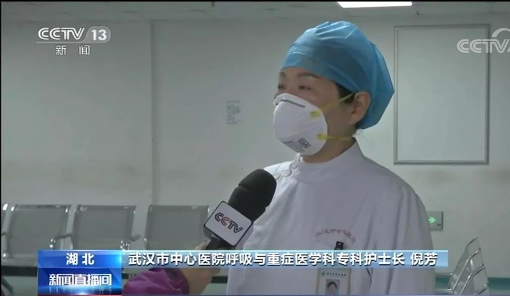
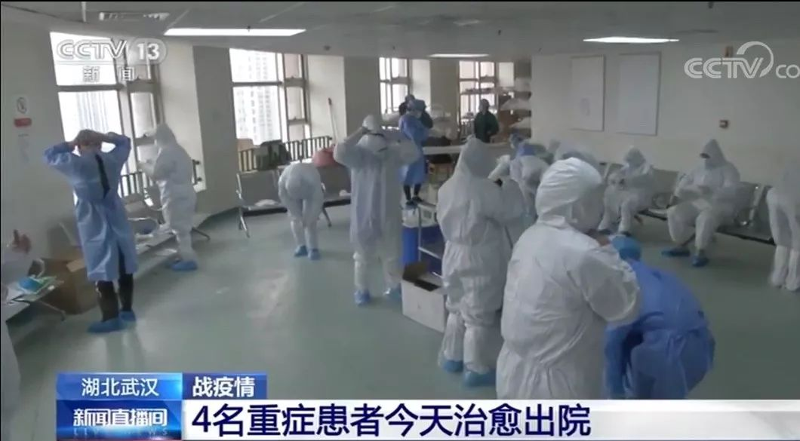

拯救武汉：实录封城后最艰难的三周 |《财经》封面
原文链接 备份链接 一座人口过千万的超级大都市在突降灾疫后陷入休克，然后艰难走出混乱无望 财经封面。创意设计/黎立 文 |《财经》特派武汉记者 刘以秦 信娜 王小《财经》记者 房宫一柳 黎诗韵 俞琴 王丽娜 王静仪 陈亮 李斯洋 李皙寅 …

病人激增过程中，医护人员感染的情况开始出现。
武汉市中心医院是当地27家三级甲等医院之一，官网显示，该院职工总数有4300多人。其前身为汉口天主堂医院，有140年的历史，主要有后湖和南京路两个院区，均位于汉口，两者相距五六公里，其中后湖院区距离华南海鲜市场不到两公里，这也是武汉市中心医院较早接触到新冠肺炎病例的重要原因。
截至2月4日，武汉市中心医院在全市定点医院中，收治的发热病人仅次于金银潭医院，开放床位510张，已用床位525张。然而，在此次参与新冠肺炎救治的过程中，武汉市中心医院的职工中，截至1周多前达到新冠肺炎临床确诊标准的已达230多人，其中130人住院，100多人居家隔离，多位科主任与院领导都“中招”。
这家医院的现状，是此次疫情中武汉市医疗系统的一个缩影。
2月14日，国新办就疫情防控最新进展特别是关爱医务人员举措举行发布会。发布会上，来自国家卫健委的数据是，截至2月11日24时，全国共报告医务人员确诊新冠肺炎病例1716例，其中湖北省1502例，而武汉市的医务人员确诊人数达到了1102例，占湖北的7成多。
用红圈标注的检测报告
艾芬1997年毕业于华中科技大学同济医学院后，进入武汉市中心医院工作，现任该院急诊科主任。据她介绍，2019年12月18日，一名65岁的男性个体经营者来到医院南京路院区看急诊。在五天前，他出现发热症状，体温高达39.1℃，发热前有寒战，但无鼻塞、流涕、呼吸困难、咳嗽等症状。此前在12月16日，该男子先是到医院门诊就诊，经过阿莫西林克拉维酸钾、奥司他韦及乐松片等三天对症治疗无好转后被收入急诊病房。急诊科医生给该男子尝试了碳青霉烯类高级的广谱类抗菌素，依然无任何好转迹象，而其肺部感染表现为“双肺多发散在斑片状模糊影”。
12月22日，该男子转入该院呼吸科救治，12月25日转入同济医院，再之后，转入专门收治传染病人的金银潭医院。在后来的追溯过程中，艾芬了解到，该男子是华南海鲜市场的一个送货员。
12月27日，艾芬接诊了第二例此类病人，是一名40多岁来自武汉远郊区的年轻人，无华南海鲜市场接触史，在当地诊所治疗了一周多，高烧不退，肺部感染严重，指脉氧为90%。这个年轻人随后被收入呼吸科，做了纤维支气管镜与肺泡灌洗液检验。12月30日，送检的结果出来，该男子感染的是一种冠状病毒。看到化验单上标注有“SARS冠状病毒”字样，艾芬感到“很可怕”，第一时间向医院公共卫生科和院感部门报告，但医院有没有再向上级疾控部门报告，她并不清楚。
这份检测报告，于12月30日下午被该院眼科医生李文亮发在同学微信群里，并被大量转发。艾芬称，当时大学同学私下问她关于冠状病毒的消息，她就把检测报告发了过去，并特别用红圈对“SARS冠状病毒”进行了标注，但不知这份报告后来是怎样流出去的。
几乎同时，12月28日，医院后湖院区急诊科接诊了4例和华南海鲜市场有关的发热病人。到2020年1月1日前后，医院共收治了7例“不明原因肺炎”病例。12月29日，艾芬所在的急诊科向医院公共卫生科上报了这7例发热病人中急诊科收治的4例。公共卫生科回复称，已上报江汉区疾控中心。江汉区疾控中心说，湖北省中西医结合医院与武汉市红十字会医院之前也已接到类似病例。在急诊科上报的4例病例中，有一对母子，儿子在华南海鲜市场工作，母亲去海鲜市场送饭，并没有接触过华南海鲜市场的物品，但依然染病，而且病情较重，艾芬当时就推断，这个病可能“人传人”。
1月1日凌晨，后湖院区急诊科又收到了一位由武汉市红十字会医院转入的65岁男子。该男子在华南海鲜市场附近开诊所，最近收治了很多发热病人，之后自己也有了症状，病情严重。艾芬分析认为，这位诊所老板的病很可能就是他诊所的病人传给他的。
1月1日，她再次向医院公共卫生科和医务处报告了该诊所老板收治了多例病人的相关消息，希望能够引起重视。她担心，“一旦急诊科医生或者护士被感染得病了，就很麻烦”。
12月31日，武汉市卫健委通报了27例“不明原因病毒性肺炎”的相关情况，称到目前为止未发现明显人传人现象，未发现医务人员感染。就在这天凌晨，李文亮受到了市卫健委和医院的警告和批评。1月1日，武汉市公安局发布通报，称有8人因“发布、转发不实消息”而遭传唤。
1月1日晚将近12点，艾芬也接到了医院监察科的信息，要求其第二天到监察科谈话。1月2日，在和监察科纪委谈话过程中，领导批评她“作为专业人士没有原则，造谣生事，你们这种不负责任的行为导致了社会恐慌，影响了武汉市发展、稳定的局面。”艾芬提及了这个病可以人传人，但没有获得任何回应。
1月2日起，医院要求医务人员之间不许公开谈及病情，不得通过文字、图片等可能留存证据的方式谈论病情，病情只能在交接班必要的时候口头提及。对于前来就诊的患者，医生们也只能讳莫如深。
林媛是武汉市中心医院的一名护士，在1月初听到这一疾病的相关消息后，只能隐晦地提醒身边亲友，要戴口罩。
在和医院反映情况无果后，1月1日起，艾芬只得要求自己科室的医护人员先戴起了N95口罩。
“战友”倒下
1月1日后，武汉市中心医院接收到的发热患者愈发增多，像“火山喷发”一样。艾芬所在的急诊科在1月的第一个星期内，先将后湖院区急诊外科病房改造成呼吸科隔离病房，有20张左右的床位。第二周，又改造了急诊内科病房，随后，南京路院区也将急诊病房改造成隔离病房。随着病人越来越多，所有的隔离病房都逐步搬到别处，急诊内外科的病房又改成留观门诊，一共能接纳五十多个病人，但依旧无法满足激增的患者。
倪芳是医院呼吸与危重症医学科专科护士长。1月10日，她所在科室的病房也被征用，开设了22张床位，当天床位就全部收满，她所负责的病房一直处于满员状态。
1月中下旬起，武汉市中心医院步入收治新冠病人的顶峰期，一床难求的状态一直持续到了2月初。艾芬称，1月21日急诊量和发热门诊总计达1524人，其中发热病人655人。如果按照现在湖北省临床确诊标准来讲，这1524人中，90%左右都是新冠肺炎患者。而在疫情发生前，中心医院的日均急诊量为550例左右。
病人激增过程中，医护人员感染的情况开始出现。1月10日，急诊科发现了医护人员被感染的第一个病例，是后湖院区的一名护士。“我们后来分析，她可能是口罩没有戴好，”艾芬说。
1月1日，急诊科医护人员开始戴口罩。1月10日，穿上了隔离衣。再过几天，防护等级升高，穿上了防护服。但感染的医护人员在不断增加。该院急诊科共有200名医护人员，包括50名医生，150名护士。到目前为止，急诊科医护人员CT显示肺部感染、临床诊断确诊的有30多人，核酸检测呈阳性的有7个，艾芬的团队处在“边战斗，边倒下，边补充的状态”。

武汉市中心医院医护人员在抗疫前线。 图/央视新闻截屏
艾芬分析说，急诊科医护人员感染的原因主要在于其工作强度大，急诊室空间有限，临时搭建的穿脱防护服的地方也不很规范。“突然来了这么多病人，还有家属，围着我们，空气中的病毒的密度太大了”，“护士给病人进行打针、抽血等操作时，因为近距离接触，导致了感染。”不过，好在急诊科病情严重、住院的医护人员并不多。
倪芳称，她所在的呼吸科从1月初就对这一疾病保有着警觉，“我们科室要求口罩都要戴好，勤洗手，要用手消”，在进驻隔离病房后，先后穿上了隔离衣、防护服。该院呼吸与危重症医学科医护人员总计160人左右，感染的人数大约有16个。
但并不是所有科室都有这样的防护意识和装备。李文亮是武汉市中心医院较早的感染者之一。他是在1月8日接诊一位82岁的女性青光眼患者后被感染的，接诊时“没有做特殊防护，病人来的时候也没发热，就大意了。”
据《中国新闻周刊》了解，武汉市中心医院感染的医护人员遍布甲状腺乳腺外科、泌尿外科、心胸外科、血管外科、神经内科、消化内科、眼科等各个科室，其中不少是科室主任。在眼科医生李文亮患病后不久，该科一名副主任也被感染，目前在金银潭医院插管救治。
甲乳外科主任1月16日左右做肺部CT显示出症状，而两天前他还在给患者做手术。心胸外科一名副主任医师1月22日在一场主动脉手术未做完时，就出现了畏寒的症状，手术后测体温出现了高烧，其所在科室同事推测称，该医生是在手术前后和患者、患者家属谈话时近距离接触感染的。被感染且病情较重的还包括一名泌尿外科主任医师，其中三名医生都在武汉市肺科医院救治，最重的还用上了ECMO进行抢救。此外，这次被感染的还有医院的三位副院长，其中一位副院长病情较重。
据统计，武汉市中心医院截至1周多前达到新冠肺炎临床确诊标准的职工已达230多人，其中130人住院，100多人居家隔离。
“最开始可能只有部分科室对疾病的信息了解多一点，比如说急诊科、呼吸科，而别的科室不一定知道，”艾芬说。而且，在1月15日之前，新冠病毒“未明显人传人”的说法广为传播，让前来看病的民众与其他科室的医护人员都放松了警惕。
王宇是武汉市中心医院儿科医生，平时也会接诊很多传染病患者。他告诉《中国新闻周刊》，1月初他就听说了医院有收治这类病人的消息，但对于新冠病毒到底多大的传染性、毒力强弱并不了解，因此，包括他在内的很多医生最初只是戴了一层口罩简单防护。而对于很多不接触呼吸道传染病的外科科室来说，可能平时看病连口罩都不戴。
中心医院护士李媛所处的是非发热门诊这样的一线科室。1月16日，她所在科室的一位病人CT显示疑似感染，她和同事这才警觉危险就在身边。
多位受访者称，大约在1月15日后，随着身边相继有“战友”倒下，医院内的医护人员对这一疾病变得重视起来，开始加强防护。心胸外科在这前后自购了一批N95口罩。王宇大约在这个时间听说了武汉协和医院已有多名医护人员感染。1月17日，医院开了院感会，下发了关于这一疾病的一些相关资料。也在这天前后，武汉同济医院发热门诊穿隔离衣、防护服的短视频在网上热传。

由于没有面屏、护目镜，武汉市中心医院后湖院区的医护人员只能用塑料袋作为代替。（图片由受访者提供）
人员紧缺、物资紧缺
17年前的“非典”，武汉并不是重灾区。看到这样“全副武装”的视频，武汉市中心医院疼痛科主任蔡毅起初还是感到奇怪，“即便当时有防护意识也不知道要穿防护服”，“同济接收了很多发热病人，他们可能更早意识到这个问题。”
艾芬称，当年非典，她还在心内科，当时只强调多通风、戴口罩，也没有戴N95，身边好像没有一个人倒下。
在院感会后，王宇上班开始穿隔离衣。但隔离衣、防护服并不是所有科室都能有。王宇说，“有可能接触感冒、发热、咳嗽这类病人的科室应该都是配了”。艾芬觉得这也没有办法，毕竟这类防护物资不是那么多，难以做到每人一件，只能优先保证重点科室。李媛所在科室的监护室收治了一名疑似的新冠病人，同事问能否配发防护服，医院则害怕医生如此穿着，会引起病人恐慌，并称还没有到防护级别。
1月21日，护士赵刚去隔离病房支援，在那里，他见到了正住院治疗的李文亮以及其他本院工作人员。当时，他所在病区收治的院内职工已经有20余位。1月22日，汉口医院成为专门收治发热病人的定点医院，中心医院收治的病人暂时向汉口医院转移。在汉口医院，赵刚见到中心医院院内疑似感染的职工差不多已有40位。而在最近十来天，在医护人员做好防护，且就诊人数开始减少时，艾芬称，医院医护人员的新增病例也变少很多了。
从1月21日起到1月底，武汉市政府先后征用了三批共23家医院作为收治发热病人的定点医院，以缓解武汉市仅有的两家专门传染病医院——武汉市肺科医院、金银潭医院的压力。武汉市中心医院后湖院区作为第二批被征用的三家医院之一，进行了病房改造，从1月27日左右开始集中收治病人。医院绝大部分专科门诊也先后停诊，集全院主力，前来支援。
1月29日，福建与甘肃两个援鄂医疗队进驻武汉市中心医院，分别接管了后湖院区的一个和两个病区。但2月2日，福建医疗队“转战”武汉市金银潭医院，甘肃省医疗队成了中心医院的唯一外援。该省医疗队有100多人，负责两个病区的80多名病人。中心医院绝大部分的病人救治还是要靠自己的人力。
大量的人力投入也带来了巨大的物资消耗。赵刚记得，1月21日早上，他到南京路院区隔离病房支援时，还有医用级的3M口罩可以戴，到晚上，口罩的量就不是那么充足，“护士长说，后面的物资不知道什么时候可以到”。1月22日，防护服、口罩的级别、质量就变得差一些，此后每天的物资就有了微妙的变化。
倪芳称，过年前，物资方面还可能有一些储备，医院有些渠道可以采购，但随后随着武汉封城，过年期间工人休息，物资难以供应，一些不符合医用标准、质量差的防护物资也只能先收下来，择优使用。过年前后，口罩、防护服在重点科室还可以保证有，后来病房越开越多，变得供不应求。由于没有医用级别的口罩，倪芳只能在工业口罩外加戴一层外科口罩，这样的做法维持了有半个月。
1月23日，武汉市中心医院发出了向社会求助捐赠物资的公告。2月10日，在李文亮去世三天后，中心医院再次向社会求助，而由于受李文亮事件的影响，一些网友也发出不再向中心医院捐物资的声音。记者了解到，中心医院物资来源主要是社会捐赠，通过武汉疫情防控指挥部调拨获得的数量不多。记者致电武汉市红十字会与指挥部宣传部。红十字会称，他们只负责物资的筹集，分配由防疫指挥部下设的应急保障组负责。而指挥部宣传部称，应急保障组不接受记者的采访。
医院一名负责物资筹集的工作人员在2月11日接受《中国新闻周刊》采访时称，物资目前只能按照以天为单位供应，也还是只能优先保障一线科室，而且物资医院自身也难以采购到。“但这个病有潜伏期，其他普通科室也需要防护。”倪芳说。
物资的消耗是巨大的。倪芳称，以呼吸科在后湖院区最先开设的三个病区为例，三班倒，护士医生查房，每天消耗防护服、口罩等一套完整防护装备的数量是100套。《中国新闻周刊》获得的一份武汉市中心医院物资需求清单显示，该院医用防护服每天消耗量为2280件，N95口罩4560个，一次性隔离衣4560件，防护面屏2280个。但2月14日，倪芳在接受《中国新闻周刊》采访时称，过去两天，由于没有隔离衣穿，只能将质量不好的防护服当作隔离衣，再在外面穿一件防护服。赵刚说，由于防护服质量不好，表面有沙眼，只能用胶带粘裹住，而且有些防护服穿上一蹲下来打个针就破了。而因为面屏、鞋套不足，医院医护人员还不时有拿黄色塑料袋套在头上、脚上替代的现象。倪芳称，近日医院物资又筹集到了一部分，短缺的状况暂时得到缓解。

武汉市中心医院医护人员在抗疫前线。 图/央视新闻截屏
艾芬说，由于方舱医院、火神山医院开始接收病人，过去一两周，中心医院急诊病人的数量也开始下降。2月13日，后湖院区发热门诊量只有400多，南京路院区只有几十个，而且很大一部分是之前积压的不重的病人来做核酸检测的。但床位依然很紧张，甚至是超负荷运转的状态。
赵刚说，2月12日，医院一位医生想要住进来，也要等床位。而医疗设备的欠缺也是中心医院面临的难题，疼痛科主任蔡毅说，他所在的病区有4～5个重症患者，呼吸不畅，需要上呼吸机，但他的病区只有一两台这样的机器，其他病区有的甚至一台都没有。
但医院对病人的收治还在继续。经过调整，倪芳所在的病区床位最近从22张增加到40张，集中收治重症患者。据了解，中心医院后湖和南京路院区还将总计增加300张床位，“还有很多病人没收进来”，艾芬说。
让倪芳感到有些欣慰的是，2月14日，医院又给她调配了10个护士，这意味着，她的部分同事可以轮换休息一段时间了。
（应受访者要求，文中李媛、赵刚、王宇为化名）
此文独家供稿腾讯平台，未经授权，不得转载
值班编辑：罗晓兰
封面报道之一
《新冠病毒——我们要付出多大代价》
（由5篇报道组成）
*点击下图，一键下单*

封面报道之二
《围城之战——我们如何过关》
（由6篇报道组成）
***点击下图，一键下单***


原文链接 备份链接 一座人口过千万的超级大都市在突降灾疫后陷入休克，然后艰难走出混乱无望 财经封面。创意设计/黎立 文 |《财经》特派武汉记者 刘以秦 信娜 王小《财经》记者 房宫一柳 黎诗韵 俞琴 王丽娜 王静仪 陈亮 李斯洋 李皙寅 …
原文链接 备份链接 “1月31日，最新通知下来了，由于医院各科室医护人员减员情况严重，医院决定每个科室留5名医生倒班，每班6小时。这样的值班时长对于已经连续奋战了10天的医护人员来说危险系数很高。但医护人员现在不允许请假，除非被感染。” …
原文链接 备份链接 正月十七。 又阴了。但天空还算明亮。我们依然在打听或在等待好消息。有人做了个视频，说如果钟南山讲哪天可以出门了，你们猜武汉会怎么样？然后是各种鸡鸭成群地向外飞奔，各种耀武扬威地出门派头，各种猖狂傲慢的走路姿态。原 …
原文链接 备份链接 记者/兰子木 韩谦 李佳楠实习记者/周缦卿 龙天音**** 编辑/杨宝璐 宋建华 院感科在培训医生正确穿戴防护服 “院感科”，全名“医院感染管理科”。顾名思义，其主要工作就是对医院感染进行有效预防与控制。 在此次新冠 …
原文链接 备份链接 医用物资频频告急，奋战在抗击新冠肺炎疫情一线的医务人员，他们在经历怎样的生活？ 他们中，有人被确诊感染后写下了遗书，有人在床边崩溃大哭，有人被家属奉劝不要去一线……当医护人员被感染变成患者时，他们会和普通武汉市民一样恐 …